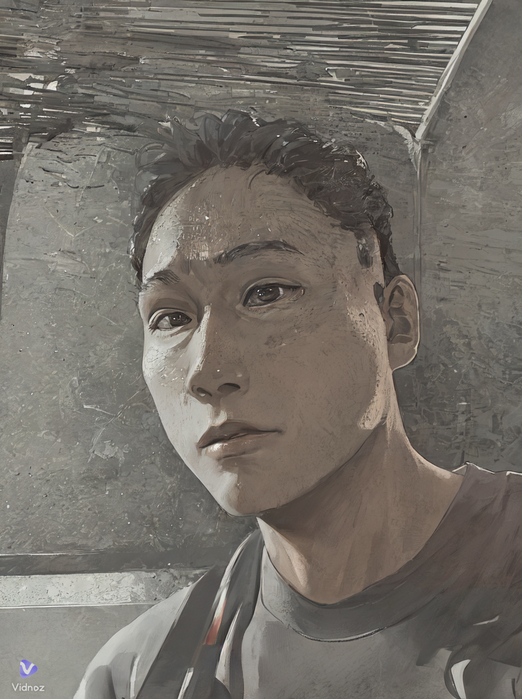
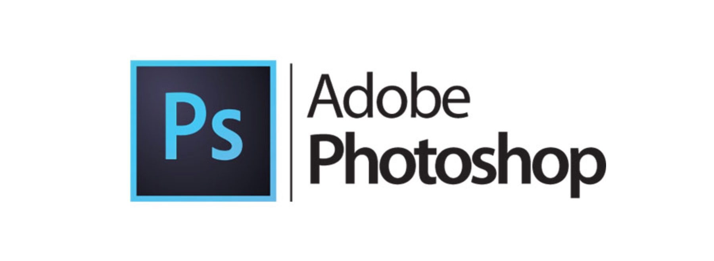
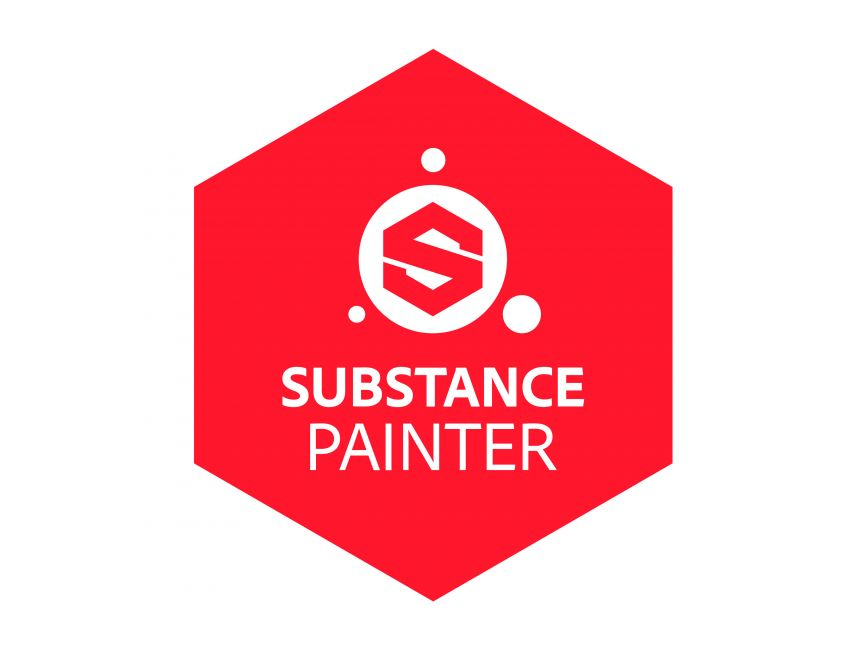
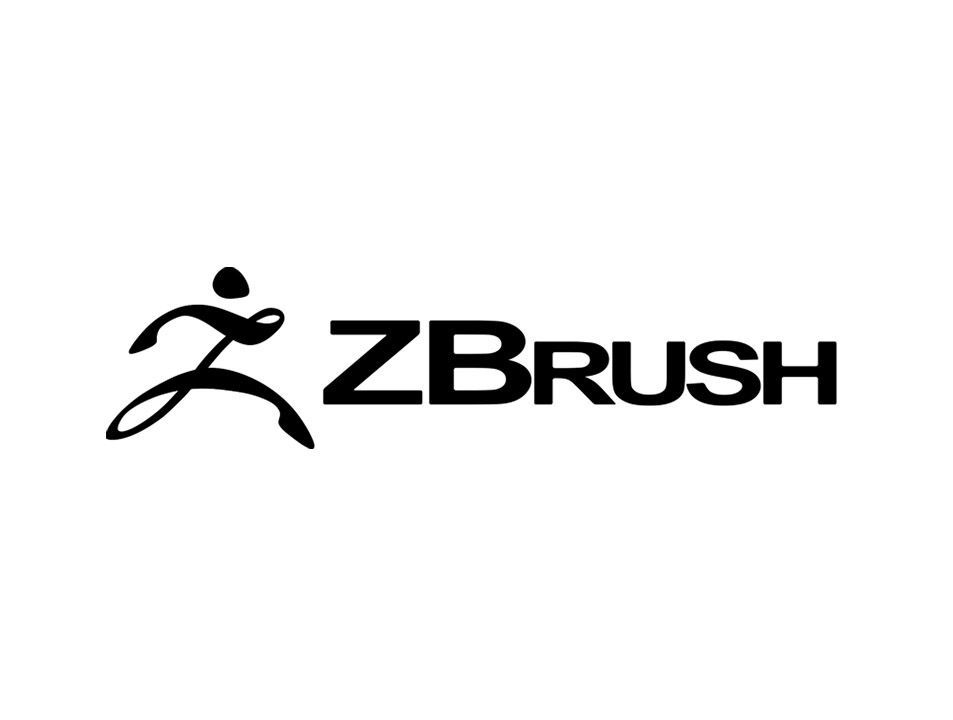
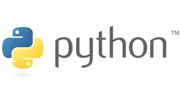

If you can dream it
you can do it.
本人紹介

MASAAKI
４０歳にて転職を決意し、約１４年勤めた仕事（公務員：消防士）を退職しました。現在は、フィリピンのセブ島にて英語とプログラミングの学習に取り組んでいます。
業界経験０からのITエンジニアへの転職を目指し現在奮闘中リスク１０００％ですが、やればできる（かも）の精神で現在２０代の学生、社会人の方と一緒に日々勉強(と遊び)に取り組んでいます。
こんな自分の体験記と、成長(or転落)過程を記していくブログ&ポートフォリオサイトです。（未婚）
趣味→食べること、寝ること、NBA＆MLB観戦、筋トレ、球技全般、楽しく暮らす、水泳、知らない土地の知らないレストランとスパを巡る
好きな物→お肉、お米、ビール、飼い犬と戯れる、空を飛ぶもの、リスクと引き換えにチャレンジすること、単独行動
将来の夢。目標→人の役にたつオリジナルな仕事をする。海外転職でITエンジニアとしてキャリアを積む
好きな言葉
"馬鹿になれ
とことん馬鹿になれ
恥をかけ
とことん恥をかけ
かいてかいて恥かいて
裸になったら見えてくる
本当の自分が見えてくる
本当の自分も笑ってた
それくらい
馬鹿になれ" - アントニオ猪木 -
経歴
- 東京生まれ千代田区育ち 周りがビルだらけだったため自然豊かな場所に憧れて育つ
- ３兄弟の長男、小学生でミニバスを始め、その後色々な球技に取り組む（野球、ソフトテニス、ラクロス）
- 日本の大学を卒業 機械工学を学ぶ 研究テーマ”ニューラルネットワークを用いた結合剛性推定法”
- その後、就活を始めるも理系の勉強に限界を感じメーカー就職の道を断念 父と同じ公務員の道を歩み始める。
- 在職中は、”火消し”として現場活動に６年程従事し、その後本部の装備部門及び情報通信部門で数年間働く。
- 在職中に大学院にて社会人MBAを取得、主な分野は組織論
修士論文テーマ"上司との対人関係及び人事評価システムがテレワーク環境下で従業員に与える心理的影響" - 自費にて、IT系の専門学校に１年、CG制作の専門学校に半年通う
- 大学時代にバイト先で知り合い、当時付き合っていた韓国人の彼女の影響で海外に興味を持つようになり、海外旅行に頻繁に行くようになり、その後色々な場所を巡る。過去に訪れた国（台湾、韓国、マレーシア、タイ、シンガポール、オーストラリア、インド、カナダ、ハワイ、バリ島、フランス、ベトナム、フィリピン）
- 大学時代に彼女に会いに行くという理由で夏休みの１ヶ月間韓国の延世大学にて韓国語の語学学習プログラムに参加する。そこで、海外の友人と交流を深めたことや異国にて生活する楽しさを知り、海外留学に興味を抱くも金銭的な理由により就職の道を選ぶ。
- 数年働くも、やはり海外留学、海外勤務の夢が脳裏にちらつき一度３０代前半で海外留学を決意し、バンクーバーのIT学校へ留学することを決める。学校まで決めて振込までした後にビビってしまい留学を一度諦め当時付き合っていた彼女との結婚に気持ちが流れかける。
- しかし、その後も働けど海外留学の夢が脳裏にちらつき、４０歳を超えた際に１度きりの人生なのにやらずにいたら死んでから後悔すると思い、一代決心を果たし留学の道へ進むことを決意する。
- 約１４年働いた仕事を退職し、現在セブ島の日系プログラミングスクールにて日々悪くなる一方の視力と闘いながらコーディングと英語の学習に取り組んでいる。
今後について
セブ島留学後はカナダのバンクーバーにて２年間のCOOP留学予定。１年間IT専門学校にてゲームプログラマーとして勉強して、その後１年間現地の会社で勤務する予定
ブログ
ポートフォリオ
ジュースのアルミ缶を制作
３D制作ソフトのMAYAを使用して飲料水の缶を作成しました。飲み口のプルタブの形を再現するのが大変でした。形ができてから、UV展開を実施してPhotoshopにて作成したテクスチャを貼ってデザインしました。素材のラフネス、メタルネスを調整してアルミの感じを出すのが苦労しました。その後は、Arnoldを使用してレンダリングを行いました。
アンティークキーを制作しました。ゲームに出てくるような古くて少しメッキが剥がれたようなイメージを再現するのが面白かったです。MAYAで鍵の形を造形してみました。Webサイトから色々な形の鍵のモデルを探して、持ち手の部分が円形をメインにしたものを作成してみました。造形後は、Substancepainterを使用して、マテリアルを真鍮のイメージで割り当てて、汚れや錆、素材の削れ感を表現してみました。
アンティークキーをArnoldでレンダリングしました。置き方を色々工夫してみましたが若干浮いているように見えてしまっています。今後はもう少し配置やライティングにもこだわっていこうと思います。土台は、MAYAで造形した板に、Substancepainterで木の質感を割り当てたものです。
MAYAで作成した剣をUV展開したメタルネス要素です。柄や鍔の複雑な模様は、Photoshopでデザインした画像をZbrushのアルファ機能で造形しました。
剣闘士（グラディエーター）が使用するようなごつごつしたいかつい剣をイメージして作成しました。柄や鍔、刃の部分の傷の表現は、Substancepainterで再現しました。鞘と剣を別々に制作後、Arnoldにてレンダリングをしてみました。
興味のある技術分野
- 


- 

- 
- 

保有資格
大型自動車運転免許、大型自動二輪運転免許、小型移動式クレーン操縦資格、玉掛け、危険物取扱者乙種４類、消防設備士乙種６類、英検２級、漢検２級、数検２級、TOEIC SCORE 700、スキューバライセンス(NAUI)、Linux Professional lnstitute Essentials、防火防災管理者資格甲種